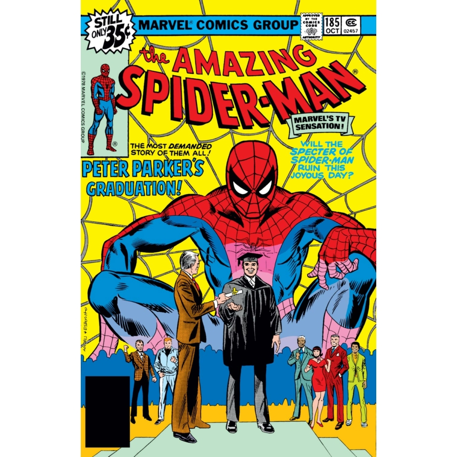

Spider-Man: The Amazing Spider-Man
Író: Stan Lee Kiadás: 1963
A "Spider-Man: The Amazing Spider-Man" a képregényvilág egyik ikonikus karakterének, Pókembernek a születését tárja elénk. Stan Lee által megalkotott 1963-as kiadásban, ez a történet mély, emberi karakterével és különleges képességeivel vált az olvasók kedvencévé a szuperhősök között.
Stan Lee

Foglalkozása: KépregényíróSzületett:1922-2018
Élet és Munka: Stan Lee az amerikai képregényipar legendás alakja volt. A Marvel Comics egyik alapítója és hosszú éveken át a cég írója és szerkesztője volt. Örökség: Stan Lee az iparág egyik ikonja és a képregények aranykorának kiemelkedő alakja. Kreativitása, karakteralkotó képessége és hozzáállása mély nyomot hagyott a képregények világában.